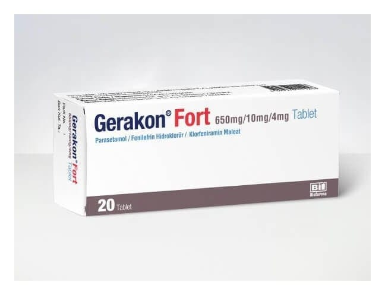

Gerakon Fort 650 mg/10 mg/4 mg Tablet, 20 Adet

Ne için kullanılır
KT · Bölüm 1• GERAKON FORT, tablet formunda bir ilaçtır. GERAKON FORT tabletler beyaz renkli, çentikli, oblong görünümdedir.
• GERAKON FORT, bir ağrı kesici ve ateş düşürücü (parasetamol), bir antihistaminik (klorfeniramin maleat) ve mukozanın şişkinliğini azaltarak tıkanıklıkları gideren bir dekonjestan (fenilefrin hidroklorür) olmak üzere üç etkin madde içeren kombine bir ilaçtır. • GERAKON FORT, 20 tablet içeren blister ambalajlarda, orijinal kutuda kullanıma sunulmaktadır. • GERAKON FORT grip ve soğuk algınlığına bağlı ateş, üşüme, vücut ağrıları, baş ağrısı, burun tıkanıklığı hapşırma ve burun akıntısı gibi belirtilerini azaltır.